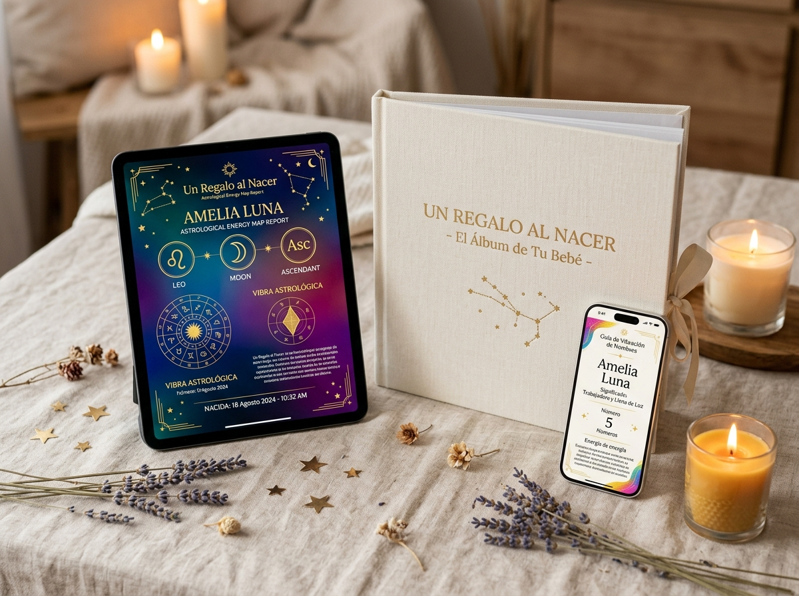
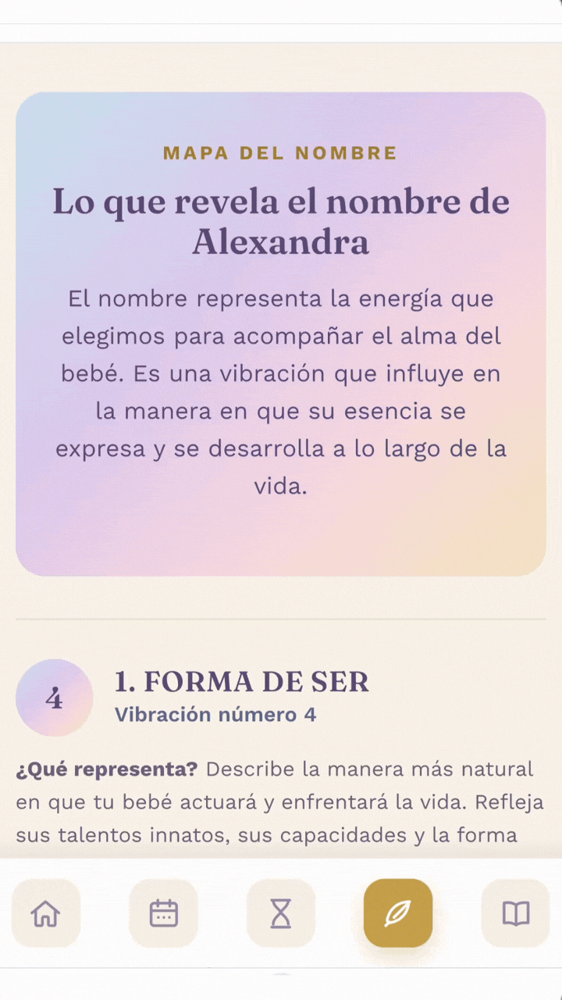
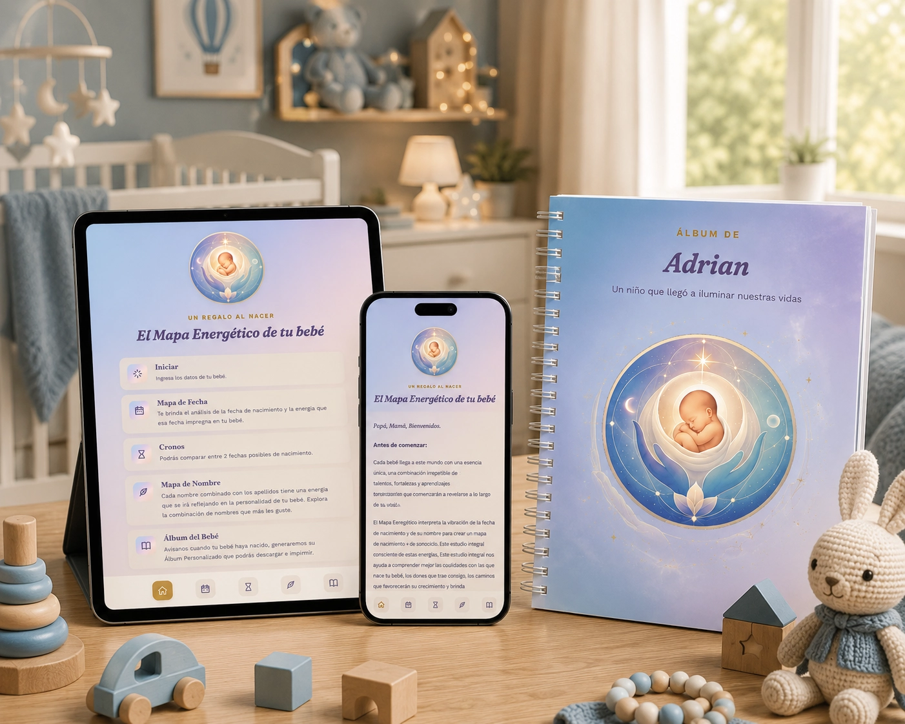

Ir descubriéndolo solamente con el paso del tiempo
- Probar distintas formas de estimularlo sin una referencia inicial.
- Interpretar su temperamento desde expectativas generales.
- Elegir entre varios nombres o fechas sin una perspectiva adicional.
Estás a un paso de acceder a Un Regalo al Nacer ($27 USD) que incluye:
Compra 100% Segura con Garantía Incondicional de Satisfacción por 7 Días
Descubre el Mapa Energético de tu bebé
Una interpretación personalizada de los talentos, fortalezas, aprendizajes y forma particular de sentir, aprender y relacionarse con la que tu bebé llega a este mundo.
Quiero el Mapa Energético de mi bebéAcceso inmediato · Resultado en minutos · Garantía de 7 días
Se genera a partir de su fecha de nacimiento (o fecha tentativa sin aun no ha nacido) y su nombre, para ofrecerte una nueva perspectiva desde la cual comenzar a conocerlo y acompañarlo mejor.

Qué mejor regalo que comenzar a comprenderlo desde el primer día, para acompañarlo con mayor empatía y ofrecerle estímulos que conecten con su manera natural de crecer.
No se trata de decidir quién será...
Se trata de comenzar a comprender quién está llegando a tu vidaCada bebé llega con una combinación irrepetible de talentos, fortalezas y aprendizajes que comenzarán a revelarse a lo largo de su vida.
Un Mapa Completo
No existen dos mapas energéticos iguales. Su nombre y su fecha de nacimiento contienen una vibración única y especial
Acompañamiento Amoroso
Un Regalo al Nacer les ofrece una mirada más profunda, amorosa y consciente para acompañar a su bebé desde el primer momento, respetando quién ya es en esencia.
Comprensión y Empatía
Su Mapa Energético les permitirá conocer esa esencia desde una perspectiva diferente, para guiarlo con mayor comprensión, empatía y amor desde el primer día.
No pretende decirles quién será... Les ayuda a Comprender Mejor Quién está Comenzando Su Viaje.
No es necesario esperar hasta el parto para comenzar a conocer a su bebé.
Y si ya nació...
¿Qué esperas para conocerlo mejor?
Si ya tienen una fecha probable de parto o una cesárea programada, pueden generar desde ahora su Mapa Energético.
Y si todavía están entre varias posibilidades, podrán comparar distintas fechas y descubrir cómo cambia la energía que acompañará a su bebé en cada una de ellas.
Explora todas las combinaciones que quieras antes de tomar la decisión final.
Elegir un nombre o una fecha es una decisión profundamente personal. Ahora podrán hacerlo con una perspectiva completamente nueva.
Ya Tiene una Historia Antes de Nacer.
Mucho antes de escuchar su primera risa...
de sostener su pequeña mano...
o de verlo dar sus primeros pasos...
tu bebé ya trae consigo una esencia única...
Una Forma Especial...
de Sentir • de Aprender • de Relacionarse • de Crecer
Cada interpretación se genera a partir de los datos de tu bebé. No recibes un documento genérico: el contenido cambia según la fecha y el nombre que ingreses.
Descubre la energía asociada a su fecha de nacimiento: sus talentos, fortalezas, aprendizajes, camino de crecimiento y la misión de su alma

Explora distintas combinaciones y observa cómo cambia la energía que cada nombre aporta a su expresión.

Compara dos fechas posibles y descubre las diferencias energéticas entre ambas opciones.

Cuando nazca, actualiza sus datos y genera un Álbum Personalizado que podrás descargar e imprimir. Más de 35 páginas con las Mapas, Recomendaciones y espacios diseñados para acompañar el crecimiento de tu bebé

Un Regalo al Nacer nace de años de acompañar a familias con este mismo método... Esto es lo que algunas de ellas comparten:
⭐️⭐️⭐️⭐️⭐️
"¡Nos ayudó a elegir el nombre perfecto sin dudas!"
"Teníamos 3 nombres en mente y no lográbamos ponernos de acuerdo mi esposo y yo. Al generar la interpretación energética del nombre, sentimos una paz enorme. Entendimos qué energía resonaba con nosotros y con la fecha estimada. ¡Fue un momento mágico en nuestro embarazo!"
- Carolina & Mateo (mamá primeriza embarazada de 34 semanas) Cd. de México
⭐️⭐️⭐️⭐️⭐️
"Una guía tierna y sorprendentemente acertada"
"Al leer las recomendaciones de la Guía para mamá y papá entendimos el carácter tan dulce pero determinado de nuestra bebé. Las recomendaciones sobre cómo darle seguridad emocional nos han servido muchísimo en sus primeras semanas. Además, el Álbum del Bebé es precioso."
- Sofía y Valentín (Padres de bebé de 2 meses) Bogotá, Colombia
⭐️⭐️⭐️⭐️⭐️
"Cada bebé necesita algo totalmente diferente"
"Pensé que criar a mi segundo bebé sería igual que con mi primera hija, pero el Mapa Energético me mostró la esencia única que trae mi pequeño Agustín. Me ayudó a soltar expectativas y criarlo con más empatía"
- Lucía (Mamá por segunda vez) Madrid, España
⭐️⭐️⭐️⭐️⭐️
"El comparador de fechas fue una revelación"
"Teníamos dos opciones de fecha para la cesárea. Usamos el comparador de fechas y nos dio una perspectiva espiritual y hermosa que nos ayudó a vivir el proceso con mucha ilusión y sin nervios."
- Mariana y Gabriel (Cesárea programada) Monterrey, México
Además de conocer la interpretación completa de su Mapa Energético, recibirán Recomendaciones Personalizadas para comprender mejor las necesidades de su bebé y potenciar sus fortalezas conforme vaya creciendo.
Talentos Naturales: Los Talentos con los que llega a este mundo y cómo Estimularlos de forma Natural
Mayores Fortalezas: Sus Virtudes más profundas y sus Fortalezas emocionales más importantes.
Aprendizajes de Vida: Los Aprendizajes que encontrará en su camino y que Favorecerán su Crecimiento
Seguridad Emocional: Cómo Ayudarlo a desarrollar una mayor Confianza y Seguridad Afectiva
Misión Personal: La Misión y Propósito único que viene a desplegar en este mundo
Expresión Energética: Cómo expresa naturalmente su Energía y Temperamento diario
Guía de Necesidades : Recomendaciones prácticas para comprender mejor sus necesidades y Acompañarle respetando su Esencia
Porque cada niñ@ necesita algo diferente.
Comprender esa diferencia puede Transformar la forma en que lo Acompañamos Durante Toda Su Vida
Escribe su nombre y su fecha de nacimiento. Si aún no nace, puedes utilizar una fecha tentativa y probar diferentes combinaciones de nombre o comparar distintas fechas.
Recibirás un análisis personalizado, además de la interpretación energética de su nombre y recomendaciones para potenciar sus fortalezas y acompañar su desarrollo.
Actualiza la fecha definitiva de nacimiento y genera el Álbum del Bebé, un recuerdo diseñado para acompañarlos durante su primer año de vida.

Imagina abrir este álbum dentro de 15 años
No solo recordarás cómo era tu bebé. Recordarás cómo comenzaste a conocerlo.El análisis completo de la energía con la que llega tu bebé: sus Talentos, Fortalezas, Aprendizajes, Propósito de Vida y más.
Si aún no han decidido cómo llamarlo, explora diferentes nombres y descubre cómo cambia la vibración que cada uno aporta a su camino. Cada nombre aporta una vibración distinta, descubre cuál conecta mejor con la esencia de tu bebé. Una ayuda muy especial para quienes todavía están buscando el nombre ideal.
¿Tienen una fecha tentativa?, ¿Una cesárea programada?... Comparen distintas fechas y conozcan las características energéticas asociadas a cada una para elegir la que más resuene con ustedes.
No solo descubrirán cómo es su bebé. También recibirán recomendaciones para potenciar sus talentos, comprender mejor sus necesidades emocionales y acompañar su crecimiento respetando su propia esencia.
Una vez que tu bebé haya nacido, podrán actualizar su Mapa Energético con la fecha definitiva y generar un hermoso Álbum Personalizado.
Mucho más que un resumen del estudio, es un recuerdo diseñado para acompañarlos y comenzar a escribirse la historia del primer año de vida de su Bebé.
Además Incluye:
Inspirada en la energía con la que llega a este mundo, recibirán una carta personalizada que podrán guardar entre sus recuerdos más valiosos.
Tal vez algún día se la lean antes de dormir. O quizá decidan entregársela cuando sea mayor... Un detalle pensado para acompañarlo toda la vida.
Porque Algunos Regalos Nunca se Olvidan, Se Conservan para Siempre en el Corazón
Guardarán Tesoros Imborrables...
Su primer ultrasonido...
Su primera fotografía...
Su primer zapatito...
Ahora también podrán conservar el Mapa Energético con el que comenzó su historia.
Porque algunos recuerdos no solo se guardan, Se Convierten en Parte Esencial de la Historia de una Familia
Una experiencia digital personalizada
Hoy, Todo Junto por tan Solo:
No. Este es un estudio simbólico e interpretativo, pensado para acompañar y dar una mirada distinta, nunca para tomar decisiones médicas, legales o de cualquier otra naturaleza.
Sí. De hecho es el momento ideal: puedes explorar distintas combinaciones de nombre, y si ya tienes una fecha tentativa o tienes una cesárea programada, puedes comparar dos fechas posibles y elegir la que aporte la energía que más te guste para tu bebé.
No hay problema. Puedes probar tantas combinaciones de nombre como desees y descubrir cómo cambia la energía que aporta cada una antes de decidir.
Al instante. En cuanto ingresas los datos, el Mapa Energético de tu bebé está listo para explorar.
Sí, puedes mostrar y compartir el resultado con tu pareja o con las personas que formen parte de este momento especial.
El Álbum se activa en cuanto nos confirmas que tu bebé ya nació.
No. Este estudio ofrece una interpretación simbólica de la energía asociada al nombre y la fecha de nacimiento. No determina el destino ni sustituye decisiones médicas, legales o de cualquier otra naturaleza. Su propósito es ofrecer herramientas para comprender mejor la esencia de tu bebé y acompañar su crecimiento desde una perspectiva más consciente.
El contenido cambia según la fecha y el nombre que ingreses. Por eso puedes explorar distintas combinaciones antes de definir los datos finales de tu bebé.
Sí. Mientras exploras las posibilidades puedes generar distintas combinaciones de nombre y comparar fechas tentativas dentro de la aplicación.
No. El contenido está escrito en un lenguaje claro, cercano y pensado para que mamá y papá puedan comprenderlo y llevarlo a la vida cotidiana.
Sí. Puedes generar su Mapa Energético con la fecha definitiva y crear su álbum personalizado.
Dentro de unos años, quizá no recuerdes el peso exacto con el que nació...
Pero Nunca Olvidarás la Emoción de descubrir la Esencia de Quién Comenzaba a Llegar a Tu Vida
Un Regalo al Nacer es una forma de Conservar ese Instante Para Siempre.
Comienza a conocer la Esencia Única con la que Tu Bebé llega a este mundo y Regálale el Primer Recuerdo de su Historia.